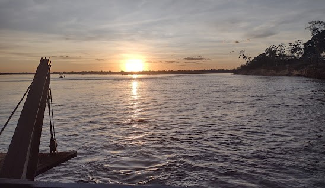
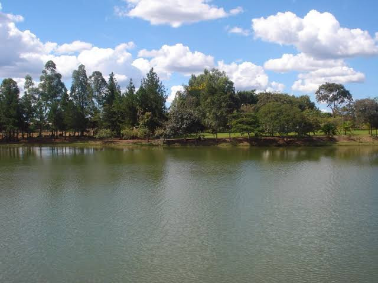
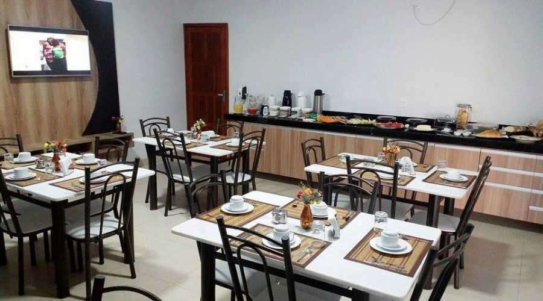
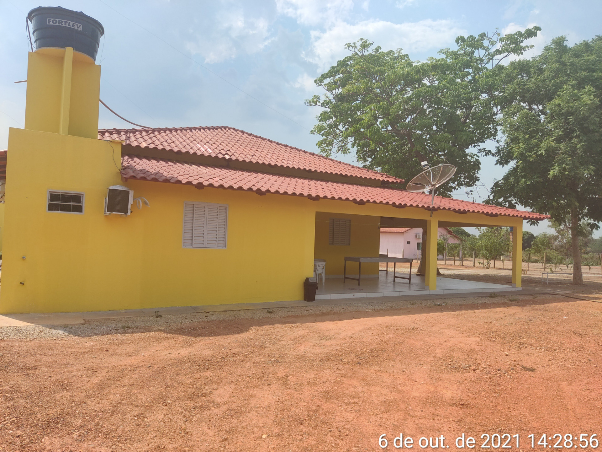
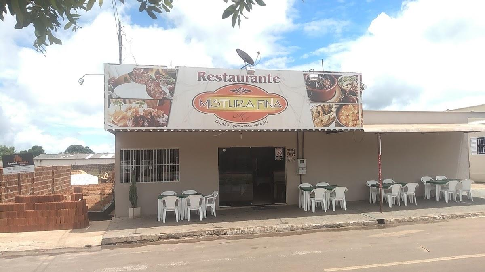

gisely

(atrações)
A aldeia Javaé Canoanã é uma aldeia de índios Javaé, Karajá e Avá-canoeiro que encontra-se às margens do rio Javaés, no município de Formoso do Araguaia.
Ela é considerada a mais antiga aldeia Javaé e conta atualmente com cerca de 800 indígenas,
Ilha Do bananal
(atrações)
O clima tropical quente semiúmido, com temperaturas máximas de 38 °C nos meses de agosto a setembro e mínimas de 22 °C em julho, predomina A Ilha do Bananal é a maior ilha genuinamente fluvial do mundo.
Leia mais...Açude
(atrações)
o lugar que voce pode procurar para descançar, pescar, relaxar e curtir
Leia mais...Golden Hotel
(lazer)
Golden Hotel, um dos melhores Hoteis da cidade, localizada av. Rio Formoso, SN, lotes 3 e 4, Qd 63 - CENTRO, muito Famosa por muitos Famosos irem visitar o Golden
Leia mais...Pousada Triuno
(lazer)
A Pousada que te atende da melhor forma possível!, As melhores comidas para aproveitar bem seu dia, Sempre aberto
Leia mais...Come Come Lanches

(Alimentação)
Endereço: Avenida Avenida Jorge Montel, S/N, QUADRAH-07 LOTE 05 Sao Jose Ii - Formoso do Araguaia - TO CEP 77470-000 Dados de contato: Telefone: (63) 8149-6978
Leia mais...Mistura Fina
(Alimentação)
Melhor lugar para almoçar e aproveitar a tarde. com varias refeições deliciosas...
Leia mais...Creme Mel

(Alimentação)
um lugar otimo para tomar um sorvete, ter dates, encontros, otimo pra passar a tarde e a noite junto com as pessoas que vc ama
Leia mais...